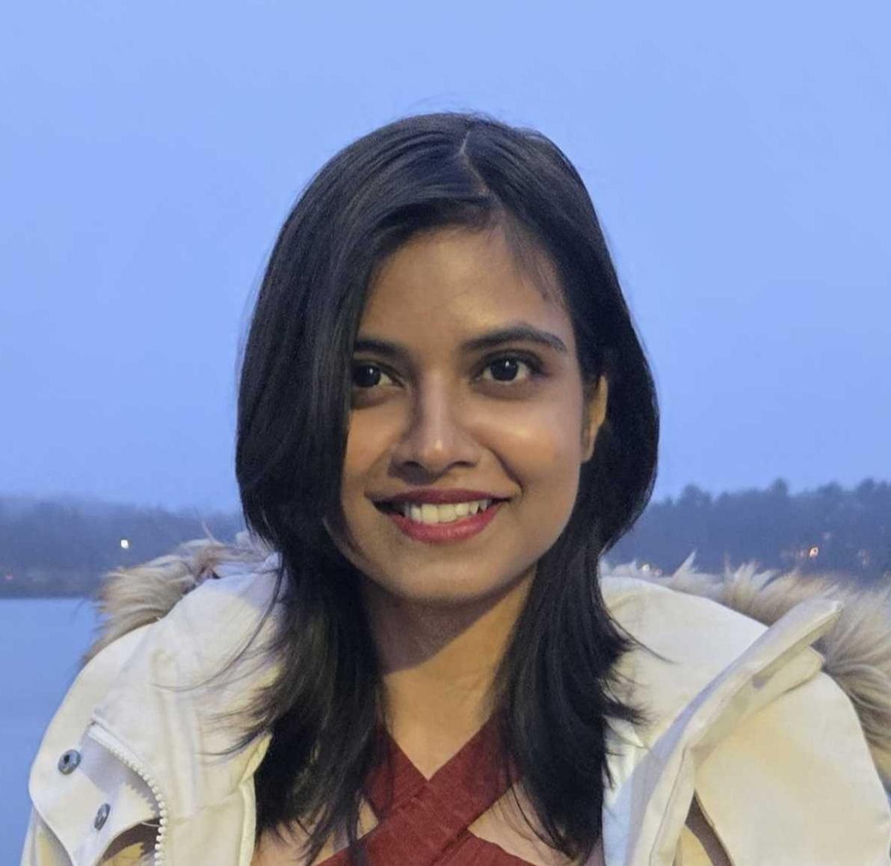
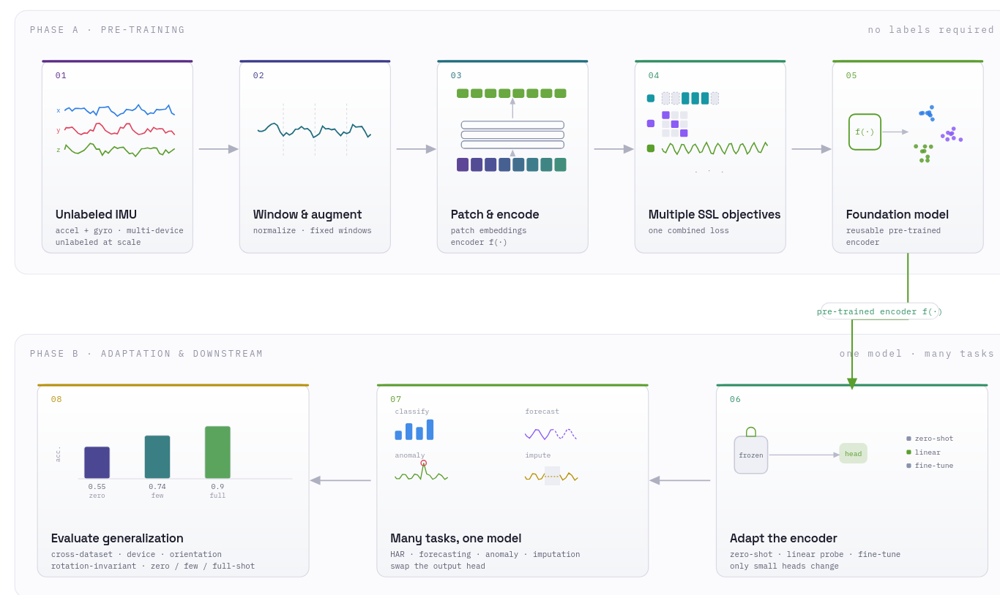
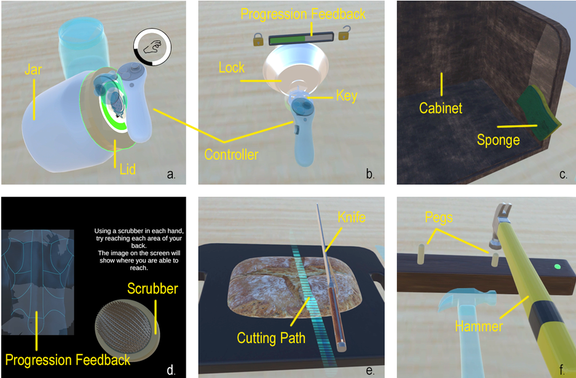
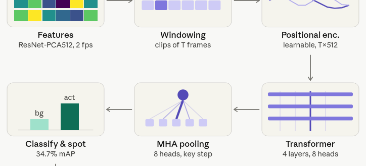
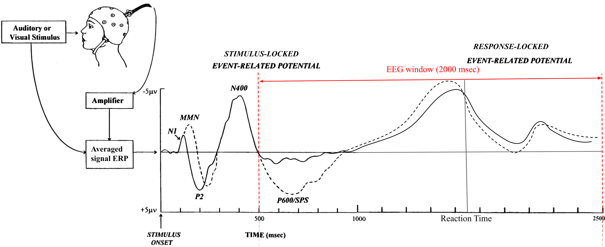
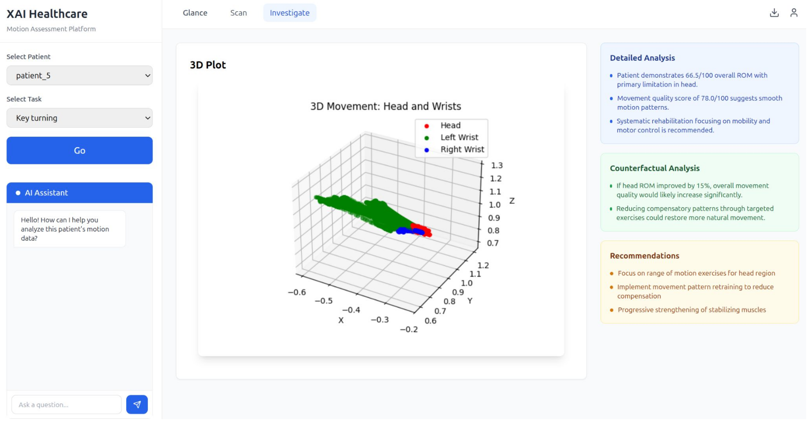
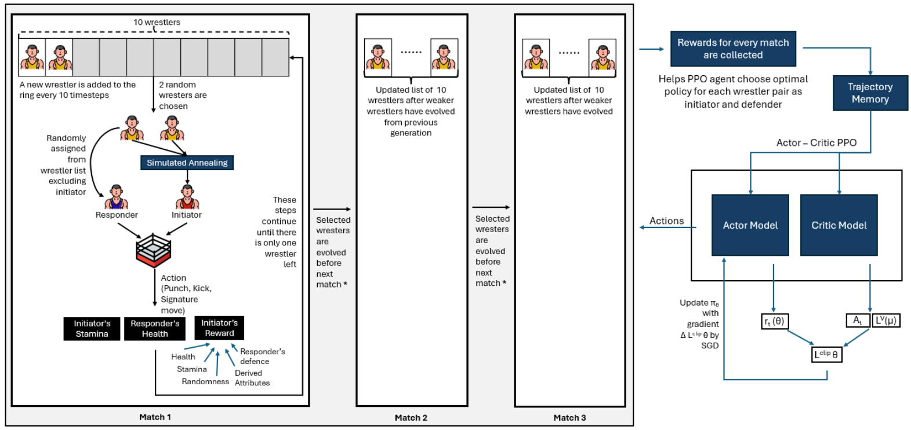

Signal in → interpretable biomarker out
I build ML for wearable and movement data in clinical populations, the regulated, messy, real-world kind. Currently leading an IMU foundation model at Mass General's OASIIS Lab, built to hold up on real patients where general-population models fall short.
The question is always the same: where (both spatially and temporally) in a physiological signal is the quantifiable pattern that reveals a clinical state? The modality changes; the instinct doesn't.
I studied it first in the brain, modeling functional-connectivity networks from resting-state EEG to track how a clinical intervention reshaped the depressed brain. Now I study it in movement by building computational pipelines that turn XR-captured motion and 6-DoF IMU streams into digital biomarkers of musculoskeletal pathology.
I'm also an engineer, not only a researcher. Two years shipping production backend systems means I bring discipline to research code, by making it clean, reusable, and built so the clinicians and scientists around me can stand on it.
Thesis in progress — Do EEG representations transfer? A self-supervised benchmark across subjects, tasks, paradigms, and modalities (HBN-EEG).

Leakage-aware harness evaluating four pretrained models — SSLWearables, UniMTS, MOMENT, and ImageBind — on patient-vs-control classification, under frozen linear probing and full fine-tuning across full- and few-shot regimes, to test whether general-population pretraining transfers to clinical cohorts.

Deep-learning baselines (1D-CNN, LSTM/GRU, Transformer) on 6-DoF IMU sequences with subject-level LOSO cross-validation across 60 subjects, plus an HMM pipeline for biomechanical phenotyping that narrowed 24 task-paradigm combinations to the informative subset.

Temporal action-spotting pipeline on SoccerNet v2 (471 matches, 716+ hrs) with positional encoding and 8-head attention pooling over pre-extracted ResNet embeddings — modular and scalable for downstream captioning.

Cross-subject reaction-time decoding for the NeurIPS 2025 EEG Challenge with no per-subject calibration. Combined spatial-convolution filters, multi-temporal kernels, and a Mixture-of-Experts head with custom load-balancing losses.

Explainable decision-support dashboard for orthopedic and rehab clinicians, grounded in user research. A three-stage framework: Glance, Scan, Investigate, paired with a Gemini-powered RAG assistant tuned to clinical guidelines.

Custom non-stationary multi-agent environment combining PPO with evolutionary learning, used simulated annealing for initiator selection and genetic algorithms to evolve weaker agents, surfacing emergent mixed strategies over 10,000+ episodes.
I'm looking for AI Applied Scientist / ML Engineer roles in digital health, wearables, and digital biomarkers where teams are putting models on real human signal data and into real clinical or product use.